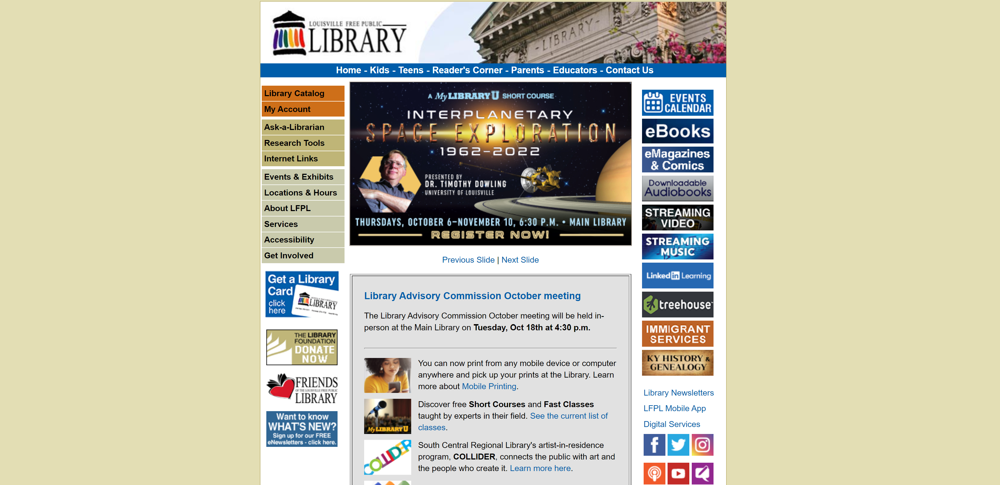
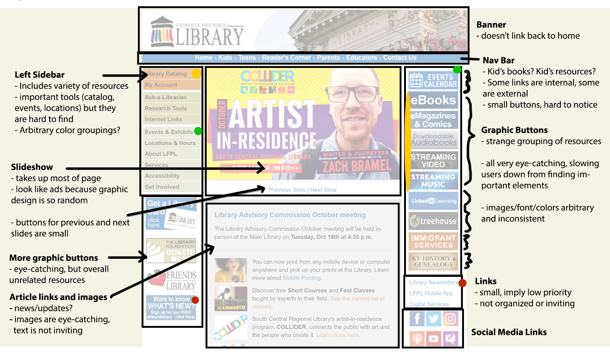
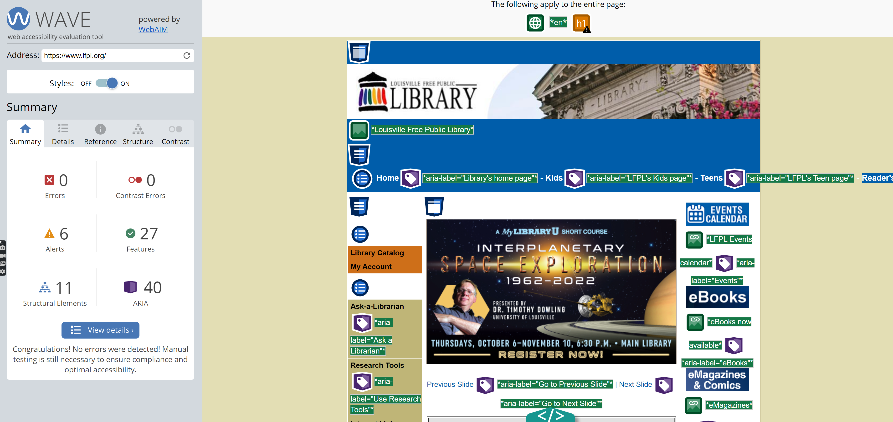
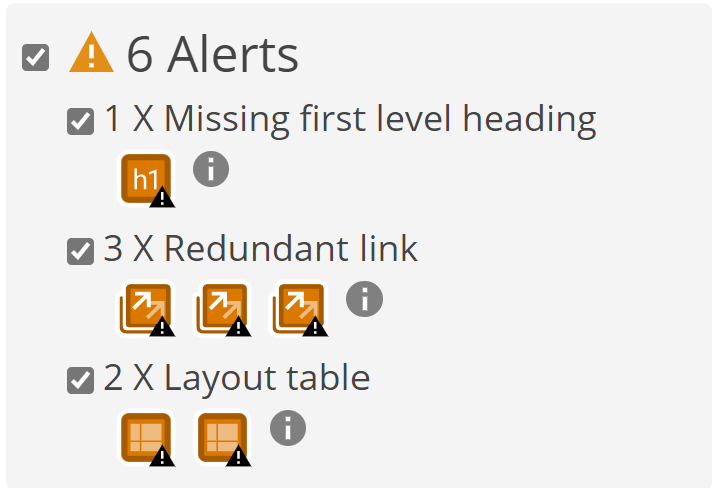
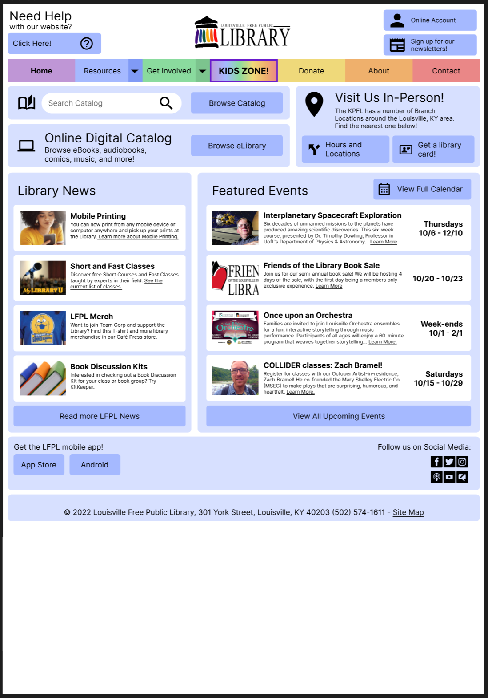
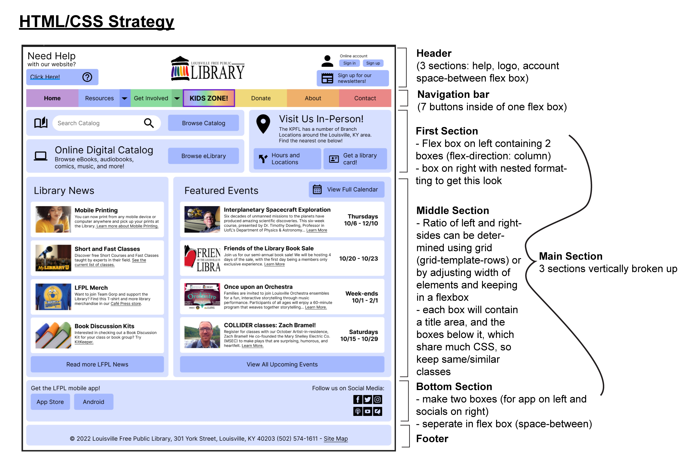

Part 1: Identifying Usability Problems
Selected Website:
The webpage I chose to re-design is the homepage of the Louisville Free Public Library's website.
I chose this website to redesign because
- The user interface is overwhelming and outdated
- I stumbled on it while looking for my hometown (Louisville, CO) library website, but it turns out this one is for Louisville, KY (which I thought was funny)
Identifying Problems:
Figure 2: Specific Problems
General Problems
| Usability and Efficiency |
|
|---|---|
| Accessibility |
|
| Conceptual Model |
|
Accessibility
The LFPL website was entered into WebAIM WAVE, a site that detects possible accessibility problems.
WebAIM revealed that the website uses Aria labels quite effectively to help visually impaired users. In fact the only issues that the site flagged were that the page was missing an "h1" tag, and that some links were repeated on the page, so pretty minor issues.
Part 2: Visual Redesign
Low-Fidelity Prototypes
Visual Design Guide
High-Fidelity Prototypes
As much as I'd like to share my actual figma, it is linked to my real name, so here are some screenshots. I made a seperate interface for mobile that was a little less crowded, but didn't have time to implement it in my actual HTML webpage because I put so much work into the desktop version.
Desktop Figma
Tablet Figma
Mobile Figma
Here is the plan I made for implementing the actual elements. I relied mainly on Flex-box, but I could also use Grid for some parts.
Part 3: Responsive Redesign
You might notice that the formatting does in fact break down when you resize the window to be super narrow on desktop. This is because I ran out of
time to complete my mobile prototype. However, if you go into developer settings, you will notice that the format does not break down on any of the preset devices.
It simply gets narrower and then resizes on ipad and mobile, which is an functional solution for now.
I also suggest you zoom in using ctrl+ . It does break down after a point, but since the formatting is based on REM units it holds up pretty well.